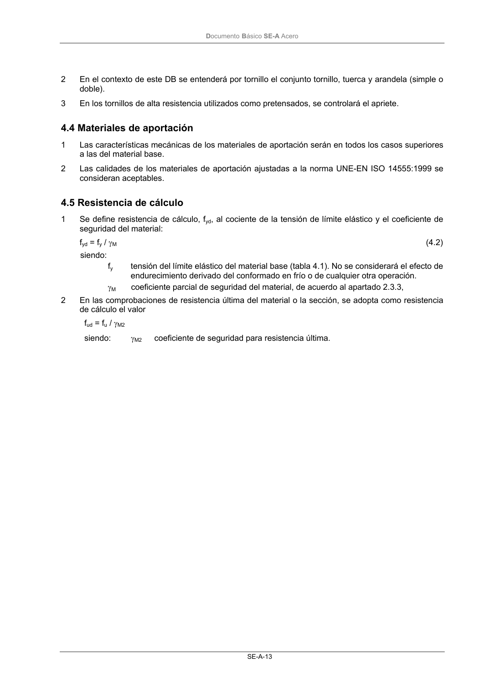

DB-SE-A · 4.5 Resistencia de cálculo · versión 2007-10-23 · capa oficial
Formatos: JSON compacto · Markdown · PDF fuente
Ámbito del documento · texto del ámbito · documento y tablas
ID técnico a0039 · PDF pág. 15-17 · jerarquía no validada por persona · contrastado con el literal de la página 15 (candidato tipográfico); no validado por persona · padre: raíz
4.5 Resistencia de cálculo 1 Se define resistencia de cálculo, fyd, al cociente de la tensión de límite elástico y el coeficiente de seguridad del material: fyd = fy / γM (4.2) siendo: fy tensión del límite elástico del material base (tabla 4.1). No se considerará el efecto de endurecimiento derivado del conformado en frío o de cualquier otra operación. γM coeficiente parcial de seguridad del material, de acuerdo al apartado 2.3.3, 2 En las comprobaciones de resistencia última del material o la sección, se adopta como resistencia de cálculo el valor fud = fu / γM2 siendo: γM2 coeficiente de seguridad para resistencia última. DocumentoBásico SE-A Acero SE-A-15

PDF fuente redistribuible: copia fiel enlazada en esta página (SHA256 verificado).